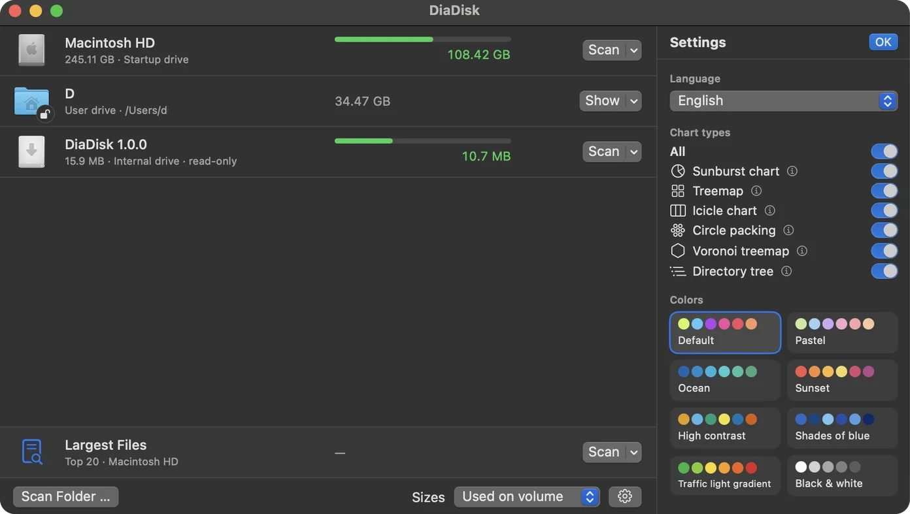

Sieh, was deinen Mac füllt.
DiaDisk – der smarte Speicher-Analyzer für deinen Mac – verwandelt unübersichtliche Datenberge in sechs verschiedene, klare, interaktive Ansichten.
- Volle Transparenz in 6 Ansichten: Erkunde deinen Festplatten-Speicher aus verschiedenen Blickwinkeln und finde Speicherfresser in Sekundenschnelle.
- Ultraschnell & Nativ: Für Apple Silicon entwickelt – maximale Performance bei minimalem Ressourcenverbrauch.
- 100 % Privat & Sicher: Kein Konto, keine Cloud, keine Telemetrie. Deine Daten bleiben garantiert da, wo sie hingehören: auf deinem Mac.
- Made in Germany: Sorgfältige Entwicklung, Datenschutz nach höchsten Standards und kompromisslose Qualität.
macOS 14+ · Apple Silicon (M1 oder neuer) · 7 Tage alles testen. Danach bleiben die Eiszapfen-Ansicht und die Standardfarben kostenlos, alles Weitere ab 1,99 € zzgl. MwSt. (Einführungspreis).
DiaDisk in 30 Sekunden
Scan starten, Ansichten wechseln, Farben wählen – ein kurzer Rundgang.
Sechs Ansichten, ein Ergebnis
Derselbe Scan, sechs Blickwinkel. Wähle die Ansicht, die für dich am besten lesbar ist.

Funktionen
Alles, was du brauchst, um schnell zu verstehen, wohin dein Speicherplatz verschwindet.
Sechs Ansichten
Strahl-, Kachel- und Eiszapfen-Ansicht, Kreis-Verschachtelung, Voronoi-Treemap und Verzeichnisbaum mit Größenbalken.
Größte Dateien
Mit einem Klick die 20 größten Einzeldateien auf der Macintosh HD.
Laufwerke und eigene Ordner
Die Startseite listet deine Laufwerke, dein Home-Verzeichnis und Ordner, die du selbst hinzufügst, auch Netzlaufwerke.
Als Administrator scannen
Auch Ordner einbeziehen, die nur Administratoren lesen dürfen. DiaDisk liest dabei nur und verändert nichts.
Ehrlich bei Lücken
Sind Ordner gesperrt oder von macOS geschützt, weist DiaDisk darauf hin, dass die Größen unvollständig sind. „Details …“ zeigt die Liste.
Aktionen im Ergebnis
Im Finder anzeigen, Informationen, Pfad kopieren, In Terminal öffnen oder In den Papierkorb legen, direkt aus der Ansicht.
Logisch vs. belegt
Größe wie im Finder oder tatsächlich belegt: Du siehst beide Werte und erkennst, wo sie sich unterscheiden.
25 Sprachen, 8 Farbvarianten
Beim ersten Start wählt DiaDisk deine Systemsprache. Farben: Standard, Pastell, Ozean, Sonnenuntergang, Kontrastreich, Blautöne, Ampelgradient, Schwarz-Weiß.
100 % lokal
Kein Tracking, keine Werbung, keine Drittanbieter-Software. Dateinamen, Pfade und Scan-Ergebnisse verlassen deinen Mac nie.
So funktioniert’s
Fair, transparent und ohne versteckte Kosten.
Ausprobieren
Teste die App 7 Tage lang mit vollem Funktionsumfang.
Entscheiden
Gratis bleibenNutze die Eiszapfen-Ansicht und Standardfarben dauerhaft kostenlos.
Vollversion sichernSchalte mit einmaligem Preis ab 1,99 € zzgl. MwSt. (Einführungspreis) alle Funktionen für bis zu 2 Macs frei – kein Abo.
Unterstützen
Mit deinem Preis „Zahl, was du willst“ hilfst du mir, die App stetig weiterzuentwickeln. Vielen Dank!
macOS blockiert den ersten Start, weil Apples automatische Malware-Prüfung (Notarisierung) noch aussteht.
So öffnest du die App trotzdem:
- Prüfsumme der ZIP-Datei prüfen (siehe Download).
- DiaDisk in „Programme“ ziehen, einmal starten und die Warnung mit „Fertig“ schließen.
- Systemeinstellungen → Datenschutz & Sicherheit → bei DiaDisk „Dennoch öffnen“, mit Passwort oder Touch ID bestätigen.
Jede neu heruntergeladene Version muss einzeln freigegeben werden. Unter macOS 14 geht auch Rechtsklick → „Öffnen“.
Download
DiaDisk
ZIP herunterladenBitte den Hinweis zur fehlenden Notarisierung beachten.
SHA-256
4717e723f60859bca482bdd2450f86080691063848cd6c57974c3d2183cc30c4
Prüfen im Terminal: shasum -a 256 DiaDisk.zip · .sha256
Anonyme Zähler, Details in der .
Kontakt
Idee, Problem oder Feedback zu DiaDisk? Schreib mir an info@diadisk.de oder wähle ein Thema, dann öffnet sich dein Mailprogramm mit passendem Betreff.
Deine Angaben verwende ich nur zur Bearbeitung deiner Anfrage und lösche die E-Mails spätestens nach 30 Tagen (siehe ).